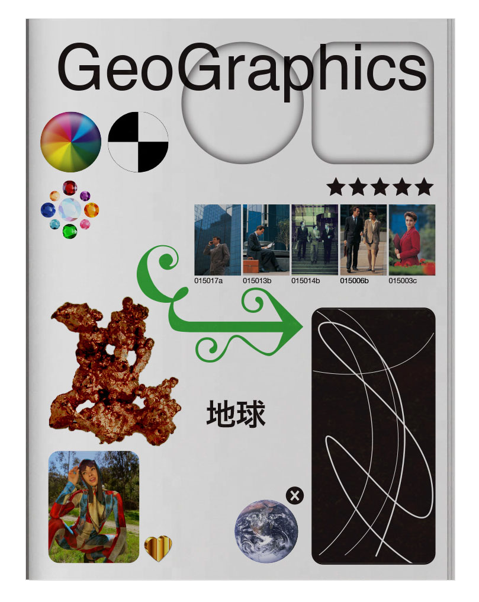

GEOGRAPHICS
AOL (stylized as Aol.) was one of the early pioneers of the Internet in the mid-1990s as the most recognized brand on the web in the United States, originally providing a dial-up service to millions of Americans, as well as providing a web portal, e-mail, instant messaging and later a web browser following its purchase of Netscape.
On August 4, 2006, AOL Research, headed by Dr. Abdur Chowdhury, released a compressed text file on one of its websites containing twenty million search keywords for over 650,000 users over a 3-month period intended for research purposes. AOL deleted the search data on their site by August 7, but not before it had been mirrored and distributed on the Internet.
As the queries were attributed by AOL to particular user numerically identified accounts, an individual could be identified and matched to their account and search history by such information. The New York Times was able to locate an individual from the released and anonymized search records by cross referencing them with phonebook listings. Consequently, the ethical implications of using this data for research are under debate.
AOL acknowledged it was a mistake and removed the data; however, the removal was too late. The data was redistributed by others and can still be downloaded from mirror sites.
In January 2007, Business 2.0 Magazine on CNNMoney ranked the release of the search data #57 in a segment called “101 Dumbest Moments in Business.”

How the computer looks at us - Joel Tyler
How the computer looks at us - Joel Tyler
Fake 3D influencer Lil Miquela - Annmarie Nocera
Fake 3D influencer Lil Miquela - Annmarie Nocera
Materials and sizes of our digital world - Kirrily Hales
Stock images - Elena Nikas
AOL search data leak - Lucinda Nguyen
Stock images - Elena Nikas
Satellites - Amelia Stockman

Digitising our bodies, acting out simulations - Maddy Andrews
Create new illustrations or typography inspired by our world of symbols and the interface - Lifi Hakim